FPGA_DDR3
1.编程结构：状态机FSM
在verilog实现顺序逻辑。
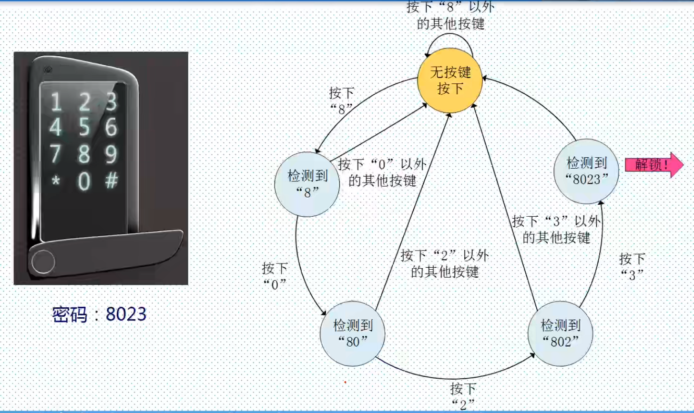
在有限个状态之间按一定规律转换的时序电路。
状态的改变只发生在时钟的跳沿。
- Mealy状态机：输出由当前状态和输入决定。
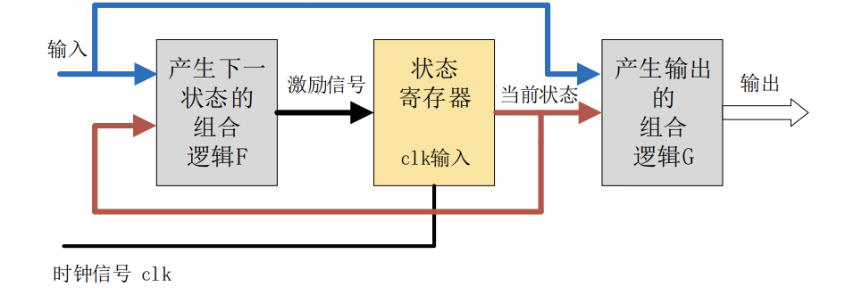
- Moore 状态机：的输出只取决于当前状态。
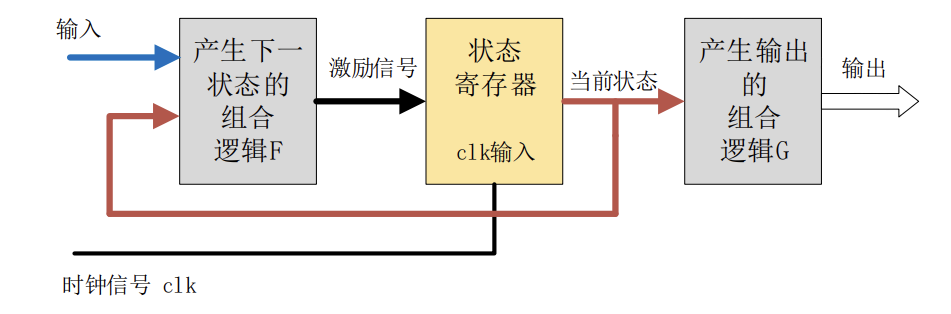
-
状态是否改变、如何改变，取决于组合逻辑 F 的输出。
-
状态寄存器，其由一组触发器组成，用来记忆状态机当前所处的状态。
-
状态机的输出是由输出组合逻辑 G 提供的。
1.1状态机设计四段论
- 状态空间定义
- 定义所有状态，对状态进行编码。
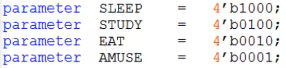
- 定义状态寄存器，位宽与状态保持一致。
- 定义所有状态，对状态进行编码。
- 状态跳转（时序逻辑）使用非阻塞赋值
- 复位：给当前状态初始值
- 下一个状态赋值给当前状态。
- 下个状态判断（组合逻辑F）使用阻塞赋值
- 敏感信号为所有右边表达式中的变量以及if、case语句中的变量。（或使用*号）

- case语句记得 default
- 敏感信号为所有右边表达式中的变量以及if、case语句中的变量。（或使用*号）
- 各种状态下的动作
1.2三段式状态机
在输出前加入时序控制。
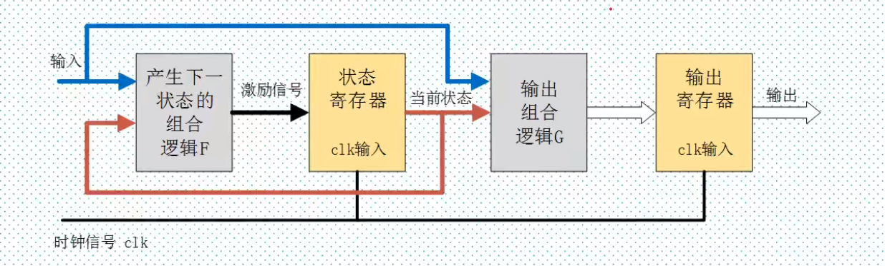
- 可以去除组合逻辑输出毛刺
- 有效进行时序计算和约束
- 易于数据对其
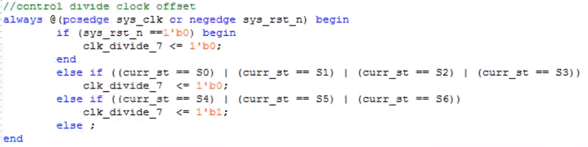
2.FIFO
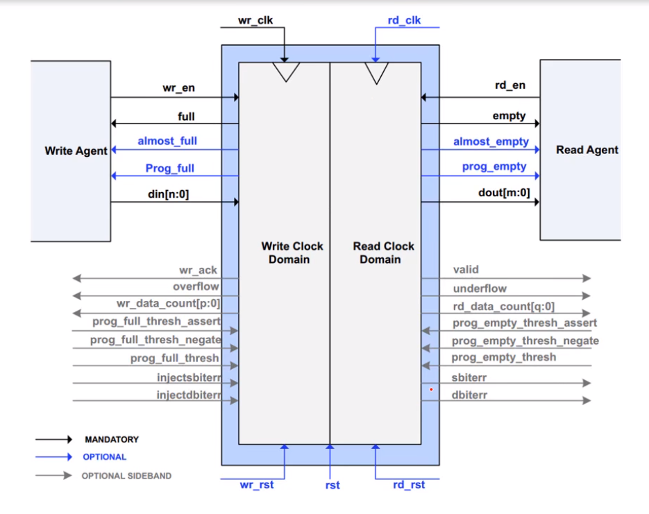
-
先入先出缓存器
-
写满时写等待，读满时读等待
-
可异步时钟时做缓存

3.DDR3入门
3.1从SDRAM到DDR3
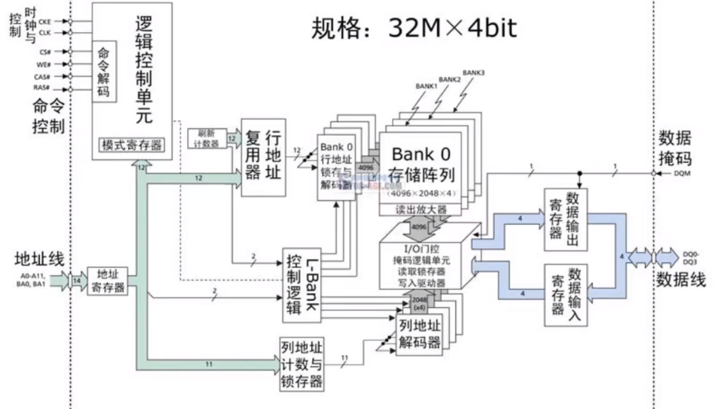
SDRAM同步动态随机存储器，需要刷新保证数据不丢失。易失。
- 物理Bank：CPU位宽
- 逻辑bank(L-Bank)：独立可寻址的片区
- 芯片位宽：每一片SDRAM本身的位宽，每一个逻辑bank内的数据位宽
需要：n片颗粒总位宽(n*芯片位宽) = 物理bank
由：L-Bank，CAS列选择，RAS行选择，对第i(L-Bank)片寻址
3.1.1SDRAM操作指令
- ACTIVE 激活行Row，RAS
- READ/WRITE 选择列读写Column，CAS
- BURST TERMINATE 中断突发模式读写
- PERCHAGRE 预充电：读下一行前需要预充电
- REFRESH 刷新：周期性刷新所有bank（A10，CKE决定刷新模式）
- LOAD MODE REG：设置SDRAM的操作参数，如突发长度、延迟类型等
- DQM：拉高屏蔽读写数据（读要在延迟时间之后读取）
Notes：写入数据无延迟，读数据有延迟（CL）
3.1.2DDR SDRAM（DDR1/DDR2）
3.1.2.1DDR1
Double Data Rate Synchronous Dynamic Random-Access Memory
使用差分时钟，DDR SDRAM通过在每个时钟信号的上升沿和下降沿发送数据，从而实现数据传输速率的翻倍。
**新增：**CK#，DQS（读方产生给写方）
3.1.2.1DDR2
新增：ODT片内终结，内置一个电压岛，吸收信号反射。加倍IO时钟，翻倍DDR1。差分DQS。4n数据预取。
EMRS阶段：它用于配置DDR2内存的一些额外参数，如OCD功能，校准DQS和DQ数据信号的交叉点。
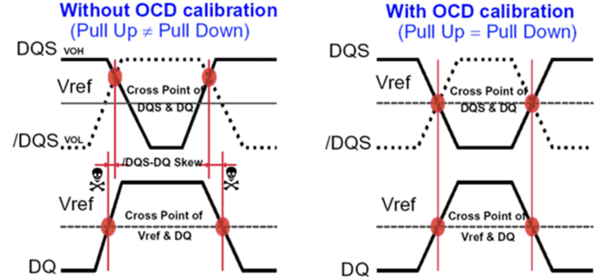
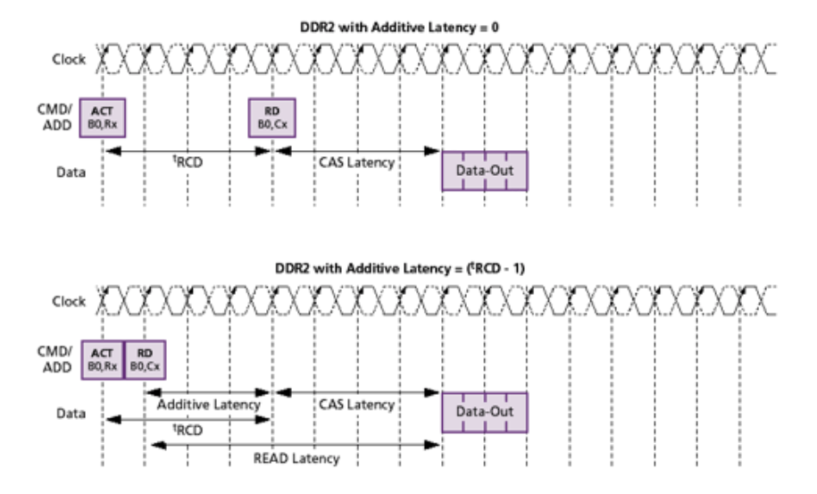
前置CAS行地址到列地址的延迟，允许RAS发送后立即发送CAS，所以新增AL（附加潜伏期）
- $t^{AL}$（additive latency）典型的DDR2：AL=tRCD-1
- $t^{CL}$（CAS Latency）列地址选通延迟
- $t^{WL}$（Write Latency）= AL+CL-1
- $t^{RL}$（Read Latency）= AL+CL
- $t^{RCD}$(Row to Column Delay)：行地址到列地址的延迟。
- $t^{RP}$ (Row Precharge Time)：行预充电时间，关闭当前行并准备下一个行访问所需的时间。
- $t^{RAS}$ (Row Active Time)：行激活时间，即行在被关闭（预充电）前必须保持激活的最小时间。
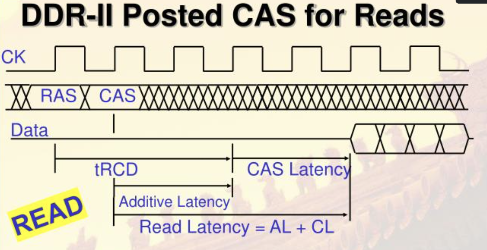
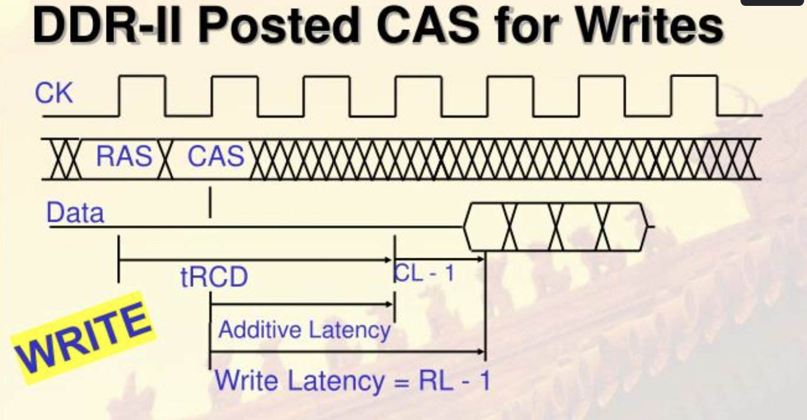
所以内存参数如16-18-18-36，就是CL-tRCD-tRP-tRAS
3.1.3DDR3 SDRAM
- 八倍预取：8n
- 突发长度：通常BL = 8
- 寻址时序：
- AL可选0、CL-1、CL-2
- 写入延迟CWD
- 新增Reset、新增ZQ校准
3.1.3.1初始化
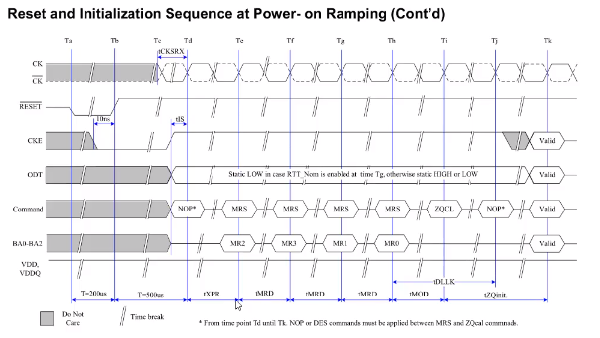
- 复位信号：低电平200us
- 复位信号拉高前CKE至少保持10ns低电平
- 复位信号失效之后要等待至少500us才能拉高
- bank+MRS 配置MR0/1/2/3
3.2DDR3实战读写测试
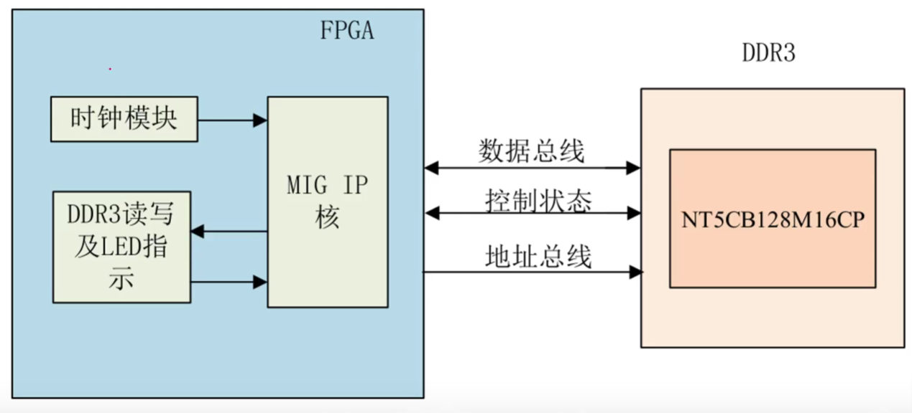
好失败啊
大费周章
磕了三天，毛用没有，调个ip核写个状态机，毫无意义调试了一天，做了一个毫无意义的装置
唯一作用就是输入一个数据进ddr3，然后读出来比较一不一样